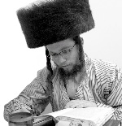
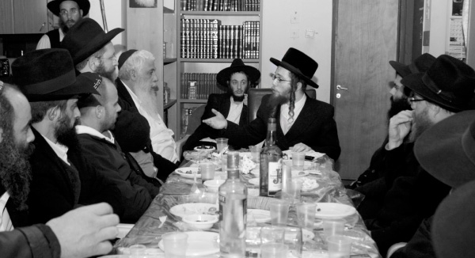

We Must Proclaim That the Rebbe Is Alive!
He is the son, grandson, and great-grandson of a number of Admurim from various Chassidic courts, but he got a taste of Chassidus and became a Lubavitcher Chassid. Today, he farbrengs and is mashpia in many places around Eretz Yisroel and inspires people to connect to the Rebbe, to write to him, and to live with Moshiach and Geula without cutting corners. * A fascinating interview with R’ Yisroel Schneebalg who tells how he came to Lubavitch and about the tremendous drift towards Chabad in the Chassidish and Litvishe worlds.
REB YISROEL SCHNEEBALG, SCION TO NUMEROUS CHASSIDIC DYNASTIES: WE MUST PROCLAIM THAT THE REBBE IS ALIVE!

R’ Schneebalg has illustrious ancestry from every direction. He is the son, grandson and great-grandson to a noble chain of Chassidus. He is the son of the Admur of Veretzky of B’nei Brak, and on his father’s side he is the grandson of the Admur of Ziditchov. On his mother’s side he is the grandson of the Admur of Kretchnif in Rechovot and the grandson of the Admur of Seret-Vizhnitz of Haifa. He is also a descendent of the Divrei Chaim of Sanz and other giants. One year ago he married the granddaughter of the Toldos Avrohom Yitzchok Rebbe and he lives in Mea Sh’arim.
“I sought truth,” he told us. He alluded to the fact that he could have continued life as it was and eventually become a leader of a Chassidic community, but now his heart burns with a fire of hiskashrus to the Rebbe. A short conversation with him revealed an astonishing familiarity with all the intricacies of the sichos and maamarim, as well as Chabad Chassidic stories and even Chabad history, as though he grew up with it all.
“Only someone who learns the sichos of 5751-5752 can get out of his prior reality and rise up to the level of the seventh generation,” he says at the beginning of the conversation.
R’ Schneebalg, who became drawn to Chabad as a young student in the renowned Yeshivas Tchebin, does not hide his views. He spreads them in the heart of Mea Sh’arim and in other Chassidic centers. There are thousands of others like him, Polish Chassidim and those from Litvishe circles, who have been exposed to Chabad Chassidus in recent years.
“Even outside of Chabad this is accepted,” he says. “Thousands of young men and bachurim learn Chassidus. There is an enormous interest and if someone thinks that ‘chai v’kayam’ and Melech HaMoshiach turns these young people away, they are mistaken. On the contrary, by explaining it properly and bringing the sources, it is mekarev them to Chassidus Chabad. It is only with this that they become Chassidim and mekusharim. What turns people from the outside off is when they see Lubavitchers talking in the middle of davening or not behaving as would be expected from someone who learns Chassidus and is mekushar to the Rebbe.”
In recent months, R’ Schneebalg has been farbrenging in a number of Chabad centers, in Chabad houses and various communities, and he has been m’chazek many people. He knows a lot but there is also an element of simple sincerity about him. He speaks straightforwardly and persuasively.
“He infused me with a fire of enthusiasm in what had become old hat for me,” said a friend of mine who attended one of his farbrengens.
R’ Schneebalg is an influential person among Polisher Chassidim. If you were to ask him, he would say the revolution is just beginning. “The work with Lubavitcher Chassidim is much harder,” he says.
It was hard to sit down with him because he keeps running from shiur to shiur and is in touch by phone with many bachurim whom he guides and advises. He has many plans for the near future.
“Learning Chassidus got me to start thinking, delving deeper, and understanding that there is something here that is incomparable to what I had been taught previously – d’veikus in Hashem of the highest order – but learning about Moshiach and hiskashrus to the Rebbe MH”M got me on the right track,” he says with his refined smile.

How did a grandson of Polish Admurim come to Chabad Chassidus and to such a strong hiskashrus to the Rebbe?
It was a winding road that was not strewn with roses, to say the least. But from the moment that he understood and decided to connect to the Rebbe, nobody could stand in his way.
“In our home there was always respect for the Rebbe. My great-grandfather, R’ Dovid Moshe of Kretchnef, spoke a lot about the Rebbe’s greatness back in the early years of the nesius when the Rebbe was not well known. My grandfather, his son, quotes a lot from his impassioned words about the Rebbe. In my parents’ home there was also great respect for writing to the Rebbe through the Igros Kodesh.
“When I was a little boy, I heard my paternal grandfather, the Admur of Ziditchov, who had been to the Rebbe for dollars, talk about the Rebbe. The Rebbe blessed him then with the words ‘may you have length of days upon your kingship.’ He described the Rebbe as someone with X-ray vision from whom nothing is hidden. My uncle, the rav in Kretchinef, also went for dollars. He learns Chassidus and has a regular shiur in Tanya. He went past the Rebbe when he was engaged. In addition to brachos, he also received a letter with a check. In the letter, the Rebbe refers to him as a relative, because of the family connection through the Alter Rebbe. So in our family, there was always esteem for Chabad and the Rebbe, but also for other rabbanim and g’dolim. The fact that we are descended from the Alter Rebbe, the founder of Chabad Chassidus, certainly added to this connection.”
His curiosity for Chabad began to blossom when he went with his father to daven in the Chabad shul in Rechovot.
“I began to realize that there are Chassidim who are Meshichistin and those who are not, but it didn’t mean anything to me. The truth is, I thought of both of them as a weird type of Chassidim. Why? Because they were different than me, different than what I knew and how I had been raised. Where I came from, I did not see people going on mivtzaim.
“In the k’hilla that my father leads in B’nei Brak, there were copies of Sichat Ha’Geula and Geula M’Anyein v’Achshavi, which is very popular in B’nei Brak. I began reading them and saw there is something big here that gives another dimension to being a Jew. It fascinated me.
“I visited R’ Chananya Kurkus’ Chabad house in Shikun Hei and saw copies of Beis Moshiach magazine there. They made quite an impact on me, especially the articles by the mashpia R’ Levi Yitzchok Ginsberg. I don’t think he realizes how influential his articles are.
“I would watch a lot of videos of the Rebbe, whether in B’nei Brak or in Rechovot. There in the lobby of the mosdos there is a VCR which runs around the clock. I remember that for a long period of time the niggun “V’Hi Sh’Amda” played in my head after I watched the Rebbe singing it.
“When I started learning in Tchebin, one of the best and well-known yeshivos in the Chassidishe world, I became even more interested in Chabad and the Rebbe. I went from curiosity to active learning. I felt that I had many questions for which I wasn’t finding answers. I tried getting close to Hashem, tried being more connected, but wasn’t successful. I would daven Shacharis every day for an hour and a half. I shuckled and shouted, I clapped my hands, but my mind didn’t sense anything. The heart moved but the mind refused to join the celebration. I was able to shuckle like a lulav while thinking about other things. It’s impossible to describe the feeling that you have this desire to come close to Hashem, but realize that you have no tools to help you do it.
“I began learning Tanya, and later on, sichos and maamarim of the Rebbe. Those in Chabad may not realize how much power Chassidus has to change someone, and not only spiritually, but mainly physically. You become calmer, nicer. I remember my friends telling me, at that time, ‘We don’t know what Chabad is, but the fact is that your face has become more cheerful and less pained-looking.’
“The one who got me deeply into hiskashrus to the Rebbe and belief in Melech HaMoshiach and ‘chai v’kayam’ was the mashpia R’ Yosef Yitzchok Zilberstrom of Lud. I attended a farbrengen of his in B’nei Brak and he spoke openly and enthusiastically about the whole inyan of Moshiach and brought halachic sources. I saw him as a role model of a Yerei Shamayim, someone serious, someone who truly loves Hashem, and this is what influenced me to listen to what he had to say.
“Friends in yeshiva who saw that I was becoming a Lubavitcher, coming back from farbrengens in Toras Emes, being an active participant in the shiurim of Mayanei Yisroel etc. began worrying about me. ‘Be a Chabadnik,’ they advised, ‘but do it quietly, at least until after you marry.’ We only marry the grandchildren and children of Admurim and they were worried about me. What granddaughter of an Admur would want a Lubavitcher, and a Meshichist yet … They kept nudging me until I decided to write to the Rebbe.
“Not far from Tchebin is a Chabad shul. I went in and said some chapters of T’hillim. Then I took a volume of Igros Kodesh and asked for advice and a bracha from the Rebbe. It was plain to me that the Rebbe was with me in every step I took.
“I opened the volume and was flabbergasted. The Rebbe’s letter was written to a yeshiva bachur in Yerushalayim who had gotten involved in Chassidus and the Rebbe explained that in the past there were fine Jews who were afraid to reveal Chassidus to the masses, but after they saw that it was those who learned Chassidus who were moser nefesh for Torah and mitzvos, and it was they who prevailed, their opposition dissipated. In the postscript, the Rebbe added that he was pleased to hear that I was attending farbrengens at Toras Emes.
“One day, I was called in by one of the rabbanim of my yeshiva who was following my progress. For three hours we had a lively debate. He told me that he highly esteemed the Rebbe, who was a big tzaddik, ‘but this is not our path.’ I looked at him and asked, ‘Do you have a better path? I tried everything. I learned all the s’farim, sifrei musar and Polish Chassidus, and haven’t found what I’m looking for, so what are you referring to?’
“Towards the end of the conversation, he threatened that if I continued along this path, I would be dismissed from the yeshiva. Some time before this, there had been a group who learned Chassidus, and indeed by the time ‘bein ha’z’manim’ was over, they received phone calls from the hanhala and were told not to come back. I was very nervous about this. I was not yet deeply planted in Chabad, but I knew one thing, that there is a Rebbe among us. I went back to the Chabad shul and asked for the Rebbe’s bracha. The answer I opened to was clear and astonishing.
“The Rebbe wrote to someone that all the opposition he faced was sourced in the opposite of k’dusha, and if he stood strong, all the obstacles would disappear. It’s easy to relate this now, but back then I had to strengthen my emuna each day, that those obstacles would in fact disappear and I would not be expelled from the yeshiva for the commotion I was making about learning Chabad Chassidus. Towards the end of bein ha’z’manim, the hanhala did call my parents and one of the rabbis said that they had no problem with me learning Chassidus and attending farbrengens. They just didn’t want me schlepping other talmidim with me. This showed me how the Rebbe’s answers were fulfilled and from then on, writing to the Rebbe became a regular thing for me.
“When I became of age, my mother, who is herself a shadchan for the children and grandchildren of Admurim, began looking into a shidduch for me. She was afraid that nobody would want a Chabad Chassid and a Meshichist to boot. She spoke to me about her fears and I, of course, wrote to the Rebbe.
“The Rebbe’s answer was that he was surprised at the haste and pressure regarding shidduchim, and in any case, there would be miracles and wonders. I showed the answer to my mother and told her there was nothing to worry about. I had had experience with the Rebbe’s brachos. She said that if she saw that it ‘worked,’ she would publicize it to all her friends and acquaintances.
“It turned out that the fact that I was a Chabadnik did not bother anyone. The shidduch suggestion that my parents accepted was with a granddaughter of the Toldos Avrohom Yitzchok Admur on her mother’s side. My wife’s father is the rosh kollel in Toldos Avrohom Yitzchok and is a Satmar Chassid. It was a miraculous shidduch. When my friends in yeshiva heard who I did a shidduch with, they hung up flyers with the Rebbe’s picture on it, the famous one from the Lag B’Omer parade, and had ‘Didan Natzach’ written underneath.
“My mother was no less surprised and excited than me. She was true to her promise and publicized the inyan of writing to the Rebbe through the Igros Kodesh.
“I, who had already become a fiery Chabadnik, had to fly to 770 before the wedding. But where would I get the money? I wrote to the Rebbe and in the answer I opened to the Rebbe blessed me with outstanding wealth. I understood that I had nothing to worry about and waited for the miracle which took place a few days later.
“A relative of mine, who is wealthy, came over to me and said that he heard that I wanted to fly to the Lubavitcher Rebbe. ‘If you have a problem with money, come to me.’ Since I had a problem with money, I went to him. He told me to find out how much a ticket cost and he gave me the money in cash.
“770 was the makke b’patish (final blow) and I became a complete Chassid and mekushar. I went to the Rebbe on 11 Nissan. On Pesach, I met a Satmar Chassid. He saw me dancing ‘Yechi’ and acting like one of the crowd, and yet I was wearing the hat of children and grandchildren of Admurim. He asked me who I was. I told him that I was the grandson of the Divrei Chaim of Sanz and the Yismach Moshe of Satmar. He couldn’t get over it and he asked me, ‘What are you doing here?’
“I explained that I had come to be in the presence of the Nasi Ha’dor. He was shocked and began chastising me. In situations like these, I don’t get worked up. I smile and respond patiently. When he finished lecturing me, I asked him what he was doing in 770. He told me that he had been coming every Pesach for twenty years. I asked him why and did not wait for an answer from him. I said, ‘Because it surely touches you and it touches me too and thousands of others. It’s just that I took the next step.’ I allowed my inner truth to lead me. You need to understand that for many of my friends Chabad is the path of truth, but to announce this publicly takes a lot of courage.
“When I returned to Eretz Yisroel I began going on mivtzaim and spreading the wellsprings. When my future father-in-law heard about this, he was taken aback. He sent a neighbor to try and deter me, but I explained to him what Chabad is, and how everything done in Chabad has halachic backing. We sat for hours, and in the end, he had nothing to say. He called my father and told him that his son was stubborn and the Rebbe was everything to him, even if the shidduch would be called off. There is no question that the Rebbe gives enormous powers. Today, I don’t know how I did it, but apparently that is the power of truth.
“I wrote to the Rebbe about great pressure being exerted on me and the answer I opened to was: mazal tov on your shidduch in the holy city of Yerushalayim, and I was happy about your going immediately on shlichus. And this that you say that by natural means you cannot accomplish, we have seen this many times that Chassidim were not able to operate according to the ways of nature, but they arrived with joy and not despair and then the supernatural entered into the ways of nature. The Rebbe added that man’s footsteps are ordained by G-d, and if Hashem gives a Jew a shlichus, He also gives him the strength for it.
“After a clear answer like that, I had no worries.
“When they were unsuccessful in dissuading me, they tried going to mekubalim to ask them to alter me through kabbalistic means, but the kabbalists said that if they were talking about Lubavitchers, then they couldn’t guarantee anything. They tried making deals with me – Chabad yes, but not mivtzaim. I sent them to my mashpia R’ Zilberstrom and said, ‘What he decides is what I’ll do.’ My father-in-law went to Shikun Chabad in Lud. He came out a different person. He saw a man who is a true Chassid, and since meeting R’ Zilberstrom, things quieted down.
“Our wedding took place in Yerushalayim and was attended by rabbanim and Admurim. It was a very happy occasion. My wife comes from a different background than me. She was raised in Satmar and was a teacher in their school, but she also understood that this is a way of life and not whimsy or slogans. She herself wrote to the Rebbe and opened to clear answers. Today, she is active among her friends and family.”
THE DIFFERENCE IN APPROACH BETWEEN POLISH CHASSIDUS AND CHABAD CHASSIDUS
R’ Yisroel doesn’t stay holed up in Mea Sh’arim. Wherever he goes, he spreads the wellsprings. He farbrengs and gives shiurim. Since he studied both Polish Chassidus and Chabad Chassidus, he can clearly see and explain the differences in approach.
“The approach of the Polish Admurim is to learn Chassidus not in a methodical way but through vertlach (brief aphorisms). Most of the Chassidishe world learns K’dushas Levi and Me’or V’Shemesh which are based on short, sometimes deep, Chassidic explanations. The Admurim of Poland interpret a certain level in Avodas Hashem based on a given verse, and you don’t necessarily understand this level.
“In the musar and Chassidic works there are ‘gates’ – the gate of love, the gate of meditation, the gate of fear. Chassidus comes from the highest source, as is explained in Kuntres Inyana shel Toras Ha’chassidus. It doesn’t work through gates; it’s far more than that. It reveals to a Jew what his place in the world is, before he even begins to deal with individual issues.
“The approach of the Alter Rebbe and the other Chabad Rebbeim is that you contemplate the greatness of Hashem, the order of hishtalshlus, the Divine energy invested into creation. Even when you are involved in material things you understand that there is Elokus. Chassidus enables you to feel how there is G-dliness within everything, that this world is under constant supervision. This naturally changes you. Before this, I would constantly think about what others would say about me. I would daven and make sure that people would see that I was really serving Hashem. If someone criticized me it disturbed me, because I considered the world as something to reckon with. In Chassidus, there is no reality of the world at all. You can truly daven to Hashem and not be preoccupied by what people think of you. An adolescent boy has questions about emuna but is embarrassed to ask. In the worst case scenario, he despairs. In the best case scenario, he fights all his life to break the evil.
“In Chabad they explain to you, before all the challenges and struggles, what a Jew is, how he differs from a goy, the order of hishtalshlus of the worlds, the reasons for mitzvos, and you begin to love Hashem, to do mitzvos joyfully, not out of fear, and you understand that there is hashgacha of the world and you are on shlichus.
“In order to gain a complete understanding of this, learning Chassidus is 80% of the work and the other 20% is hiskashrus to the Rebbe. If you just learn Chassidus, then your mind opens.
“The mashpia, R’ Meir Blizinsky, said that when he was a boy in Poland, he belonged to the Chassidus of Porisov. But it wasn’t enough for him and he looked for the path of truth. During his search he also went to non-Jewish places. When he once tried to enter a forbidden place, two former Lubavitcher bachurim stood there. When they saw him with his Chassidishe garb, they sent him away and said, ‘This is not a place for Jews. Go and learn Chabad Chassidus and you won’t have questions.’
“Just picture it. Two former Lubavitchers, bareheaded, who even when they were on the lowest level had their neshamos burning within them. They had no problem with G-d. They knew very well what the truth is, they knew there is a Creator and in the end that they would also do t’shuva. This is the innovation of Chassidus. It raises emuna to such a level that a Chassid all his life cannot truly enjoy this world.”
Why is it that the emuna that was fine generations ago, before Chabad, is not sufficient now?
“The Rebbe writes that there are no complaints against those who lived before the Alter Rebbe, but once Chassidus came down to the world, we must know it and it applies to one and all. In the past, they sufficed with the tradition that was passed down from generation to generation. Jews lived simple lives and didn’t delve into things; they accepted everything wholeheartedly.
“Rabbi Chaim Vital (d. 1620) writes in his introduction to Pri Eitz Chaim that p’nimius ha’Torah must be revealed, since the atmosphere of the world has grown coarser and conceals G-dliness. He wrote this 400 years ago! The Alter Rebbe calls it a “lofty mitzva,” so imagine what it is in our times.
“One of the great Acharonim, whose s’farim are learned in the yeshiva world, headed a famous yeshiva. They say that the talmidim of his yeshiva would daven with d’veikus, but in the dormitory they would walk around without yarmulkes and would be Mechalel Shabbos. I say this not to promulgate negativity, but to stress the importance of learning Chassidus. People can learn Nigleh just to advance intellectually, but in order to arouse love and fear of Hashem we must learn Tanya and Likkutei Sichos.
“It is just like the Rebbe Rashab describes in detail in the Kuntres Eitz Chaim about what happens to someone who learns Nigleh without Chassidus. It is known that the Baal HaTanya began his work with the word ‘Tanya’ in order to break the klipa called ‘Tanya,’ which is a klipa that is attached primarily to Torah scholars.
“What is this klipa? Just like an army has the feeling of invincibility, the same is true in yeshivos. Torah learning can lead to arrogance. I know some Masechtos so I walk around proud as a peacock, because the ‘I’ is very much on display in the yeshiva world nowadays. Chassidus puts you in your place relative to Hashem who brings the world into existence at every moment. Chassidus removes you from the equation of self-centered existence.
“A bachur in a Chassidishe yeshiva told me that for a long time already he has a problem with putting on t’fillin. He had put t’fillin on until that point because he was afraid for the World to Come, but now he stopped being afraid. ‘I’ll do t’shuva after 80 years,’ he said. When you learn Chassidus you don’t think about Olam Haba; you think and live in this world and want to make Hashem a dwelling place down here, bringing G-dliness down.
It is no secret that there is a strong pull towards the study of Chassidus these days. Why do you think this is happening now and where do you think it is heading?
“It’s been going on for many years now. There is a thirst for it, but now we need to go up a level and talk about Inyanei Moshiach and Geula too. There are Chabad organizations that only teach Chassidus and avoid the topic of Geula. They expose people to only half the truth. The entire truth is found in the sichos of 5751-5752.
“There is a Litvishe fellow who opened a shul in Beit Shemesh. The mashpia R’ Zalman Notik gives shiurim there, and this fellow and a group of other young married men ‘got the point’ about Moshiach. R’ Y.Y. Zilberstrom and R’ Zalman Landau farbrenged there. People today are seeking out the Rebbe, seeking out Moshiach. We must talk about it and not hide it, because the truth will come out, and better sooner than later.
“I have a friend who opened a kollel for Chassidus in Yerushalayim the second year after he got married. I asked him how he manages, and he said it’s miraculous. What do they learn there every evening? The sichos of 5751-5752. There is a revolution going on that most Lubavitchers don’t even know about.
“In the sicha of VaYeishev 5752, the Rebbe says that on the 19th of the month the moon is waning so why is the celebration on the 19th of Kislev? The Rebbe answers that it seems to be waning, but the reason for this is that it is getting closer to its light source, the sun. The same is true for our generation that within the darkness we see the light; we see the Geula. More and more people are becoming close to the Rebbe.
“Before Gimmel Tammuz, when we saw the Rebbe and the connection was through letters or dollars, how many people became Lubavitchers each year? Dozens? Hundreds? Today we are talking about thousands, and I am not exaggerating. This is a powerful trend of people who aren’t even changing their way of dressing, which is why people don’t know about the changes in their lives.
“I heard from a non-Chabad source that a delegation of educators in one of the yeshivos went to one of the well-known chinuch advisors in the frum world, whose name I won’t mention, in order to ask him what to do about this trend in their yeshiva in which bachurim are learning Chassidus. He told them, “I can’t deal with those who are involved with Chabad. That’s beyond me.”
How did you get caught up in the topic of “chai v’kayam?” Can’t you learn Chassidus without getting to the sichos of 5751-5752?
“The sichos of 5751-5752 are hiskashrus to the Rebbe. You can’t say, ‘I am battul to the Rebbe, but only in those sichos and maamarim that I like.’ That kind of thinking might be found among other groups, but it’s not the thinking of a Chabad Chassid.
“R’ Mendel Futerfas once said that he met a former friend who had learned in Tomchei T’mimim and then became a communist. R’ Mendel asked him, “You know the truth so how can you deny it?” He said, “I know the truth, but I didn’t work on it. I heard it but didn’t internalize it through the work of the heart.”
“In this case too, you can learn Chassidus and it definitely has an effect, but the aspect of ‘chai v’kayam’ is the avoda, the real bittul, the turning yourself around 180 degrees. Mivtza t’fillin and mivtza Moshiach go hand in hand, with the greater emphasis on mivtza Moshiach, because each mivtza must be permeated with Moshiach
“A Polisher Chassid told me that he could never be a Lubavitcher because he is mekushar to his Admur at most 30%, and in Chabad, the bond with the Rebbe is 100%. Just like the Admur is a metzius (an entity), he too is a metzius, and if the Admur would tell him to go to Thailand he would say, you go first and I’ll follow you. You can only reach the level of complete inner bittul with the insight of Moshiach and chai v’kayam. I have ties with many young men who learn Chassidus. There is a Litvishe bachur who just finished all of Hemshech 5672 but hasn’t grown a beard yet. Why? Because he did not get the point and the point is Moshiach. Only Moshiach can change your very being.
“Actually, all of Chassidus is Geula and Moshiach, yet we see that the Rebbe himself drew a distinction, and in the sicha of Tazria-Metzora it says to learn the part pertaining to Geula and Moshiach within Chassidus and this part is mostly found in the sichos of 5751-5752.”
You farbreng a lot about the need to learn Inyanei Moshiach and Geula. Why?
“Because only through learning Inyanei Geula and Moshiach can you truly live day to day in the current generation. The Rebbe says himself in Tazria-Metzora that we need to open our eyes. How do we do this? By learning Inyanei Geula and Moshiach. Learning Inyanei Geula and Moshiach gets you to internalize everything you learned, live with it, to feel it, and even to see through your mind’s eye, in a palpable way, how there is a G-d in the world.
“The Rebbe says the world is ready. This cannot be explained rationally. When you learn Inyanei Geula and Moshiach and you go out to the street, you feel that the world is ready. Even when someone opposes you, you see that it’s not genuine opposition.
“The reality is that many hold this way and there is a big revolution going on. Whoever is still not holding there simply does not know because he did not learn. There is a mashpia in one of the Chassidishe yeshivos, someone that many admire. I spoke to him about Moshiach and he was fascinated by it. He had to go to yeshiva but he delayed going; his eyes were opened. People realize that this is not an invention of Chassidim but Halacha. When you learn 5751-5752 and the rest of Inyanei Moshiach and Geula, you see how the world is ready and there are answers to all the questions; otherwise, we are stuck. Some are stuck in the 60’s, some in the 70’s, and some are still in the 50’s, but the Rebbe moved on. Let’s jump together with him. One who opposes this is someone who hasn’t seen the reality, which is the reality of Geula.”
It’s no secret that within Chabad there are those who think that publicizing Moshiach turns people off. What can you say from your experience?
“Turns people off? The opposite! It brings people in. Maybe, if they see someone spouting slogans and acting in ways unbecoming to a Chassid, it can turn people off. But in that case, it makes no difference whether the topic is Moshiach or t’fillin. They won’t accept it. A Chassid creates an atmosphere by being a role model, and only then can he explain how it’s all based on Halacha and is not his own invention. When you show them deep ideas, it captivates them, because they aren’t knowledgeable in this at all. If they knew about it, they wouldn’t oppose it. Even if in the initial conversation they react otherwise, don’t let that faze you; let them digest it.
“I spoke with a famous Admur and when we got to talking about Moshiach he said, ‘Listen, you know that I greatly respect Lubavitchers. They are more knowledgeable on this topic than I am and since I don’t know, I don’t speak for or against it.’
“I’ve spoken with many Lubavitchers who are so-called ‘antis’ and I know their position. They could have said it turns people off twenty or thirty years ago but today the world is ready. The problem is that they didn’t study this topic sufficiently well and they are afraid to get into it with people. I have a relative who was a regular participant in the Igud HaTze’etzaim (organization of the descendants of the Alter Rebbe). He would learn Chassidus, but it didn’t affect him until I started talking to him about Moshiach, and then he began to change. Turn them off? The opposite. And I am proof that this is incorrect.
“There is a bachur in Kretchinef, a descendent of the Chabad Rebbeim through the famous Slonim family. When I first spoke to him, he laughed at it, but after we learned for a few hours and I showed him all the proofs, he was convinced that the Rebbe is chai v’kayam.
“A few days later he was somewhat cooled off. I asked him what happened and he said that he had met a Lubavitcher who told him that Meshichistin are mistaken. When he asked how they are mistaken, he didn’t get into explanations, but that was enough to cool him off.
“So I ask you – what turns people off, publicizing about Moshiach or not publicizing about Moshiach? I think the answer is obvious.”
BRINGING TEN JEWS TO THE REBBE
R’ Yisroel has a request:
“I think it was in 5711 that the Rebbe asked every Chassid to commit to bringing at least ten people to him. We should bring this to people’s attention and everyone should commit to bringing ten frum Jews to learn Chassidus. This is a shlichus and a hafatzas ha’maayanos no less, and perhaps more, than working with not-yet religious Jews.”
Nosson Avrohom. "We Must Proclaim
That the
Rebbe Is Alive!." Beis Moshiach, no. 870 (February 20, 2013).